|
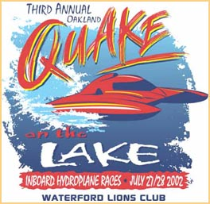 |
By all accounts, 2000's inaugural Quake On The Lake,
2001's Quake II and now Quake III were great
successes! The world records set in 2001 & 2002 attest to the quality of
the course.
Classes that raced are 1.5 Litre Stock, 1.5 Litre Modified, 2.5 Litre Stock, 2.5 Litre Mod, 5 Litre, Grand Nationals, Grand Prix, and Jersey Speed Skiff, with Vintage raceboats making exhibition runs! |
| The Pontiac Lake Recreation Area is located approximately one mile North of M-59 and N. Williams Lake Road (enter from Gale Road). It is immediately West of the Pontiac airport. Click here for a map of the area, and here for parking detail. |
|
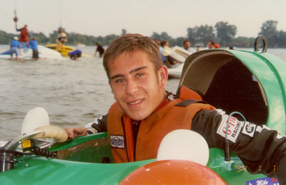 Bobby Kennedy after a heat race
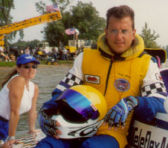 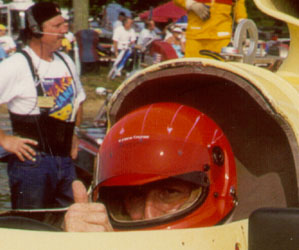 Mike Allen aboard the Teleflex Morse, and Mark Weber in a KeBar 5 Litre
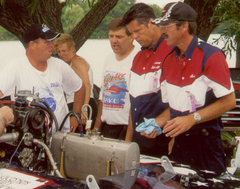 The Miller team and Lady Liberty crew worked hard ALL weekend long
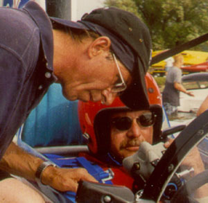 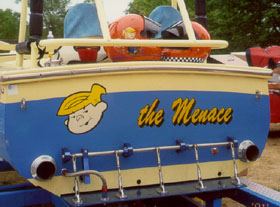 Pingree Conflitti gets ready to go, and a pic of Dennis Macy's JSS transom
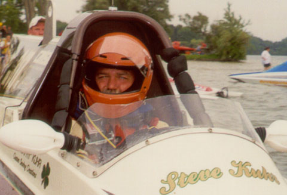 If you're guessing that's Steve Kuhr in The Irishman, you'd be right!
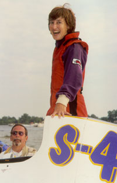 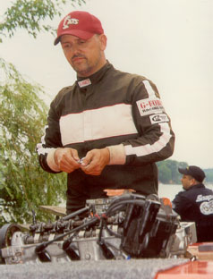 Beth Gilday returns to shore, and Greg Rothenbush works on a motor
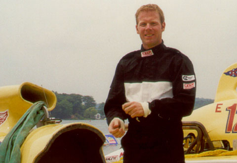 Andy Keogh gets ready for a day of racing
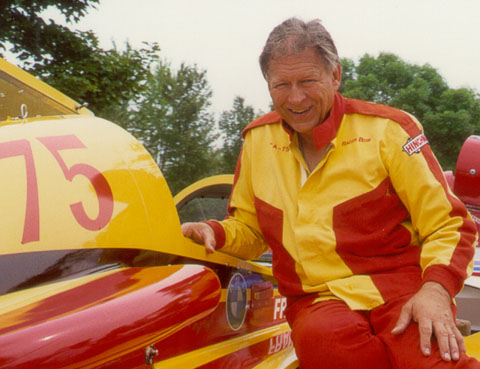 Bob Dabrowski gets ready for a day of racing too!
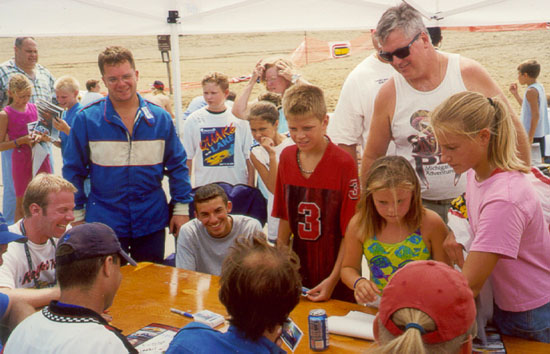 Fans and drivers at the autograph session
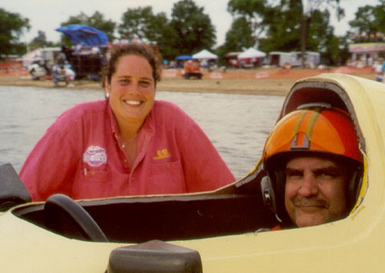 Mark Burghardt in a KeBar 5 Litre, with crew-girl Sarah
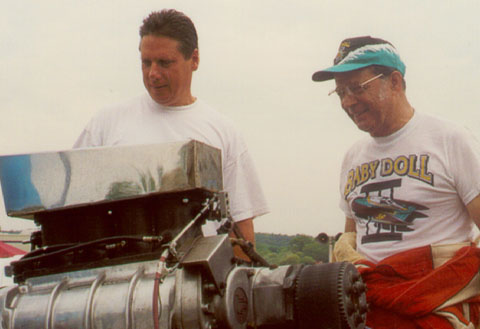 Mario Maraldo (right) and crewman look like they're ready to go
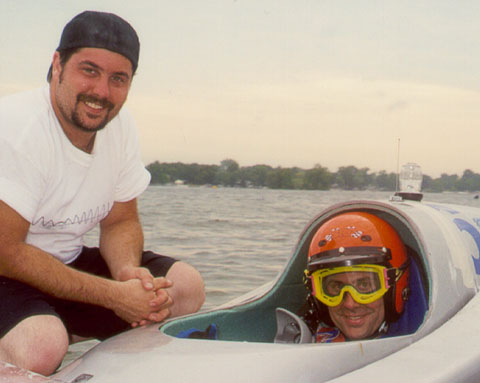 Patrick Sankuer and crewman ready to go
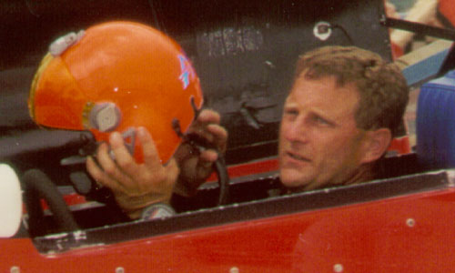 Tommy Thompson returns from a run in Tom English's 5 Litre
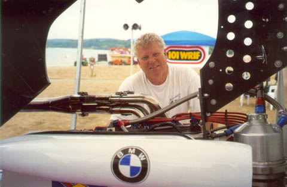 Jim Aid checks out the powerplant in his 2.5 Litre Modified |
|
Quake logo image copyright by the artist (if you know the name please tell me!)
All contents Copyright 2000-2002 Brian Reed, except where noted. All Rights Reserved.
|